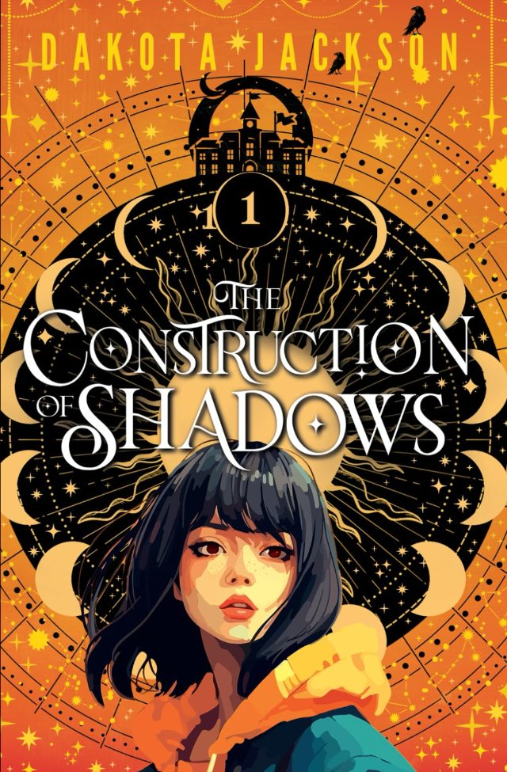
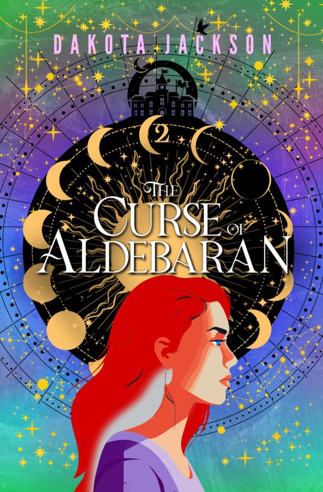
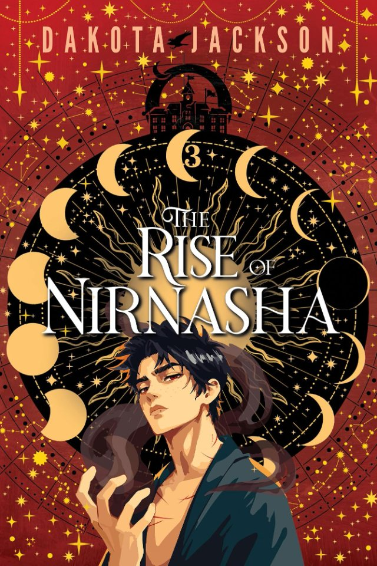
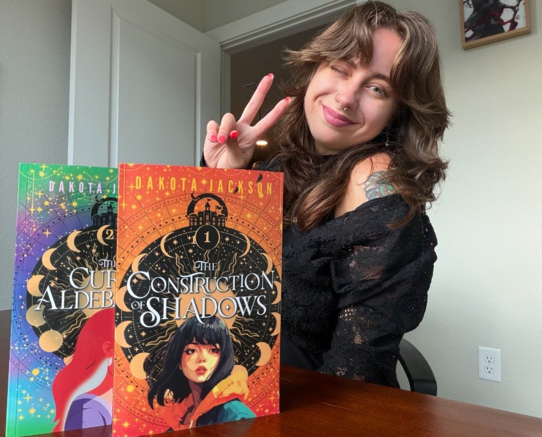

It takes a miracle to stand out.
Most people inherit their abilities from celestial deities. Meiling Katz is ordinary.
Book one
The Construction of Shadows
Suraya Zialitos is celebrated. Meiling is nobody. When terrorist attacks target them both, they have to join forces to survive.
Book one
The Construction of Shadows
In a world where standing out can mean greatness or ruin, an ordinary girl and a celebrated one become targets of the same attacks, and the whole country is afraid.
- My Hero Academia
- Percy Jackson
- Avatar the Last Airbender


Book two
The Curse of Aldebaran
Paired reconnaissance training at the Academy goes wrong. An attack by a Miyako family agent knocks Meiling’s spirit out of her body and into Suraya’s, and now the two of them share one body with no clear way out.
Get it on AmazonBook three
The Rise of Nirnasha
They survived the shared body and came out enemies. The Seven Gates to the Underworld are opening, and dark spirits are pouring into Malumvia. Suraya means to seal the Gates. Meiling, with the Mikazi Group, means to open them.
Get it on Amazon

Hi, I’m Dakota
I write queer young and new adult speculative fiction, with found families. I have an MFA in Creative Writing from Southern New Hampshire University and a BA in English from the University of Connecticut.
When I’m not writing I’m at kickboxing, binging anime or rearranging my bookshelf.
@d.e.jackson_ on InstagramOn my desk now
They Watch From the Bog. A manor, whispering wallpaper, and eyes out on the bog.
A gothic YA horror I’m drafting: seventeen-year-old Remus Foster inherits the house when his father dies, and starts looking into how his parents really died.
Say hello at authordakotajackson@gmail.com